GALERÍA DEL EVENTO
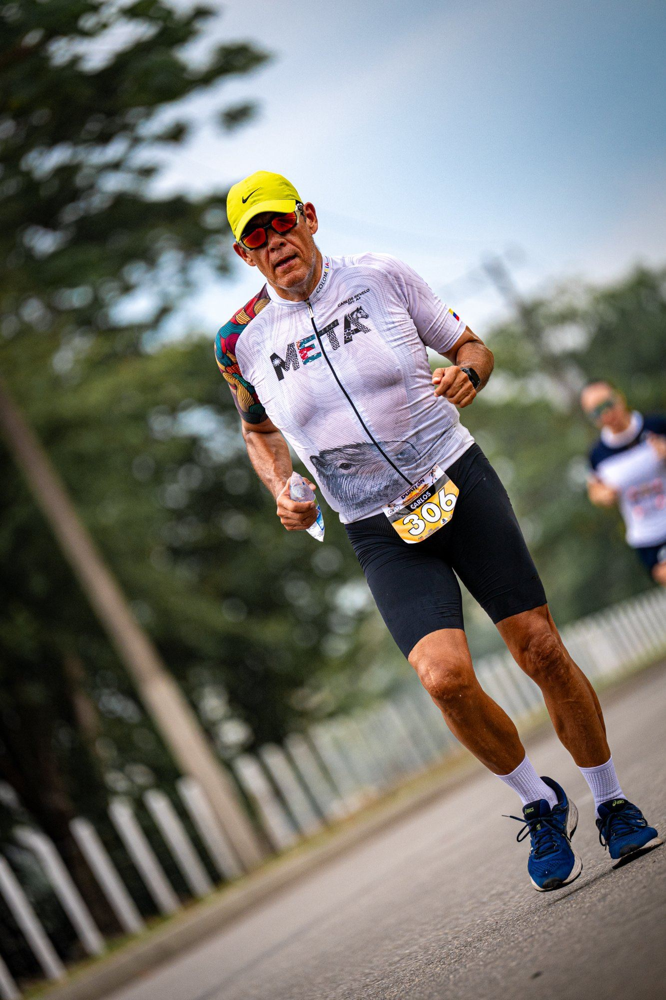
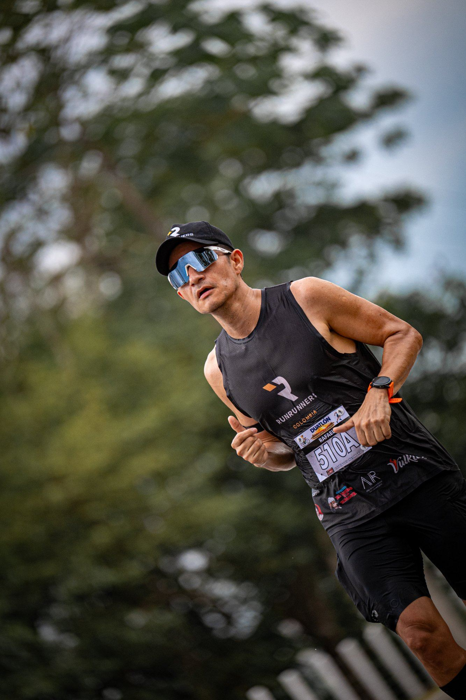
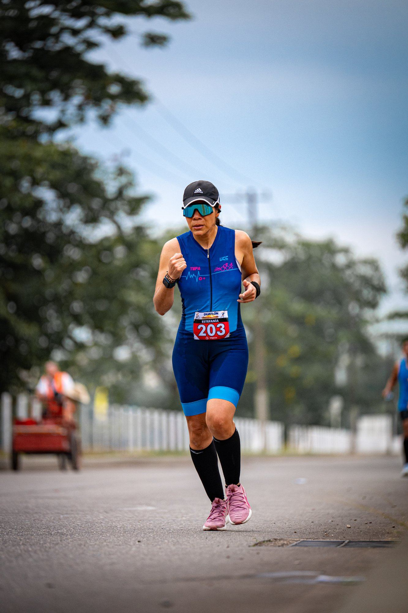
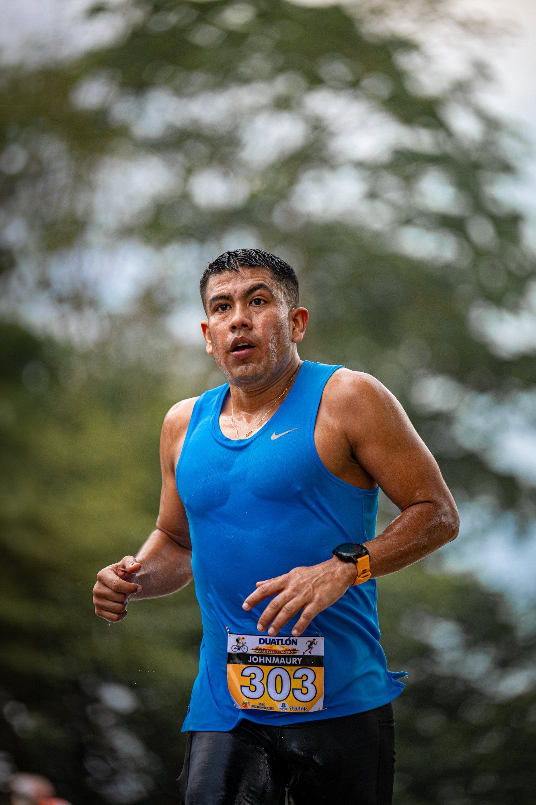
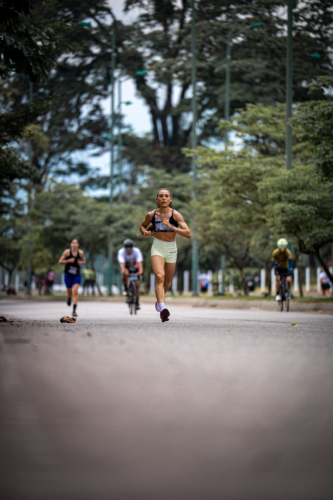
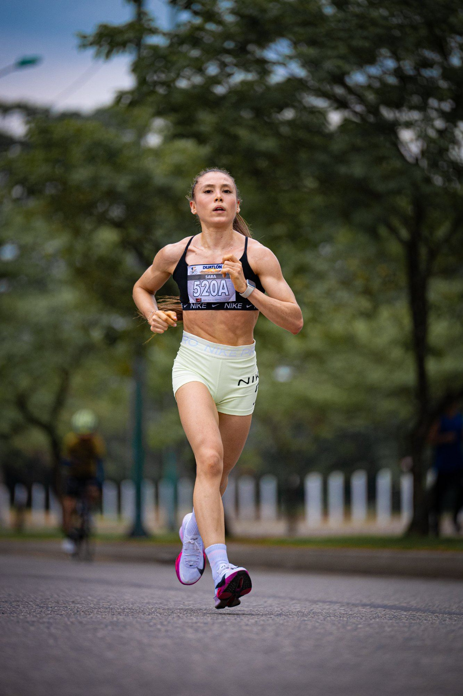
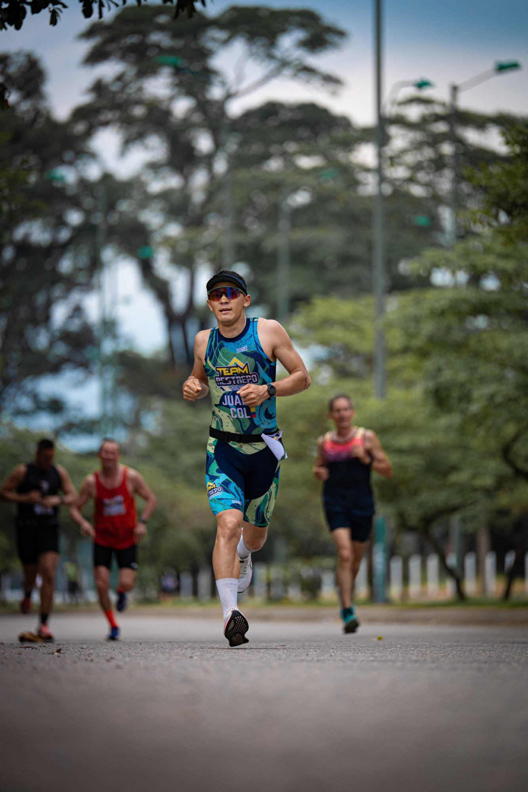
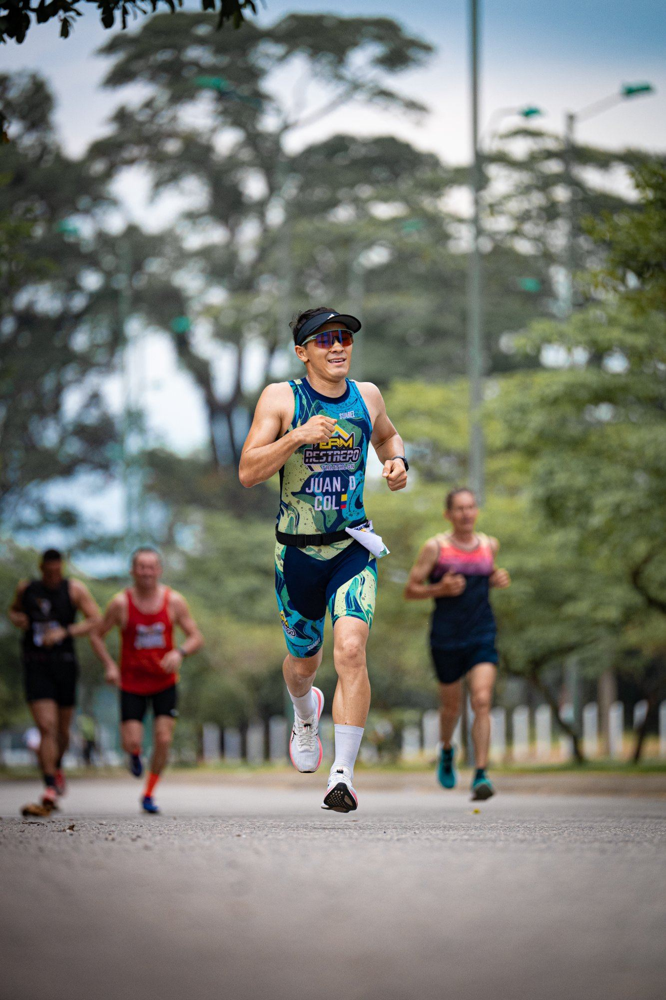
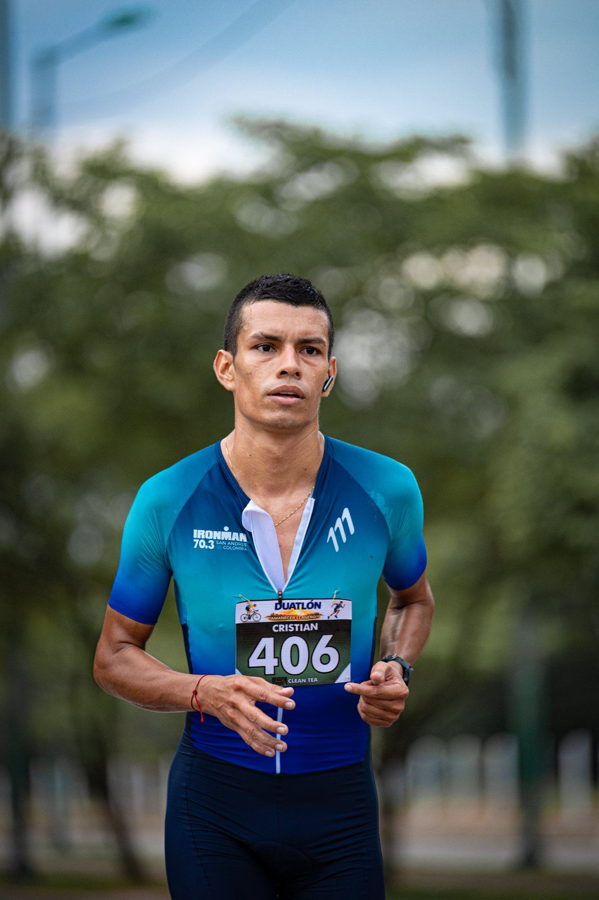
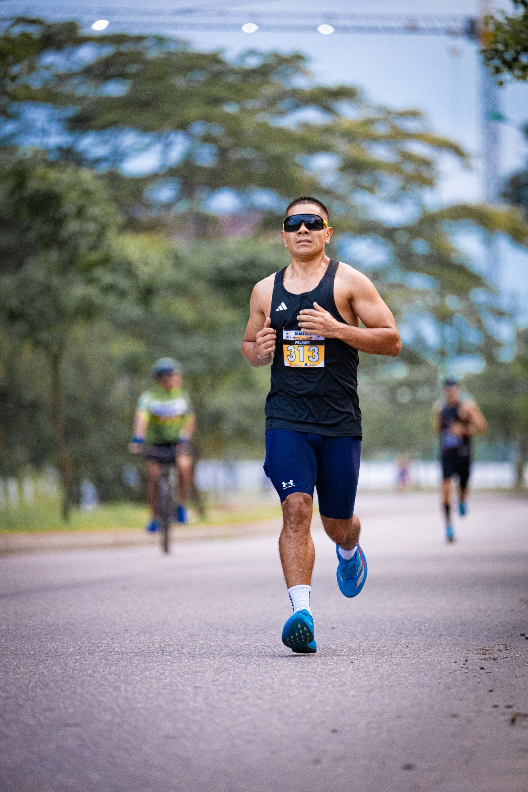
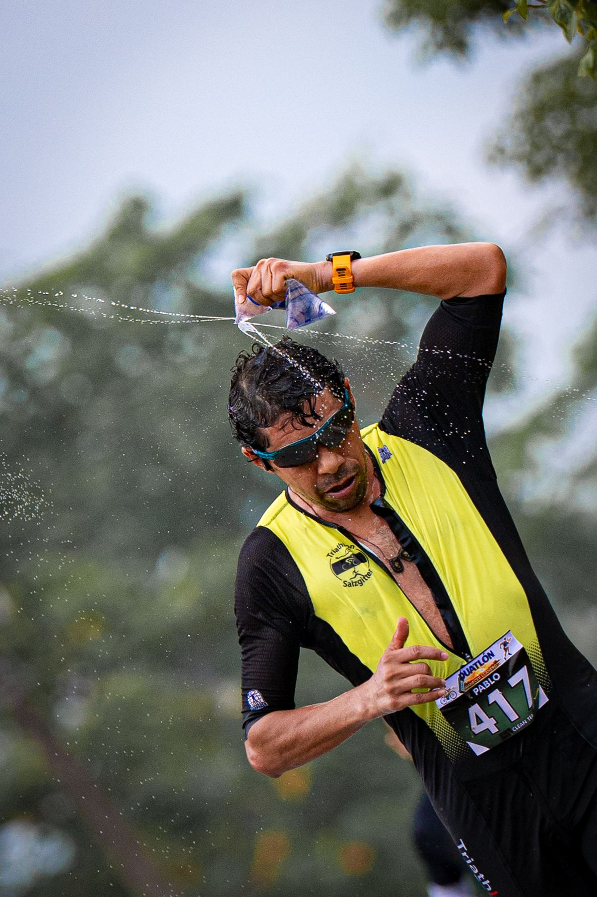
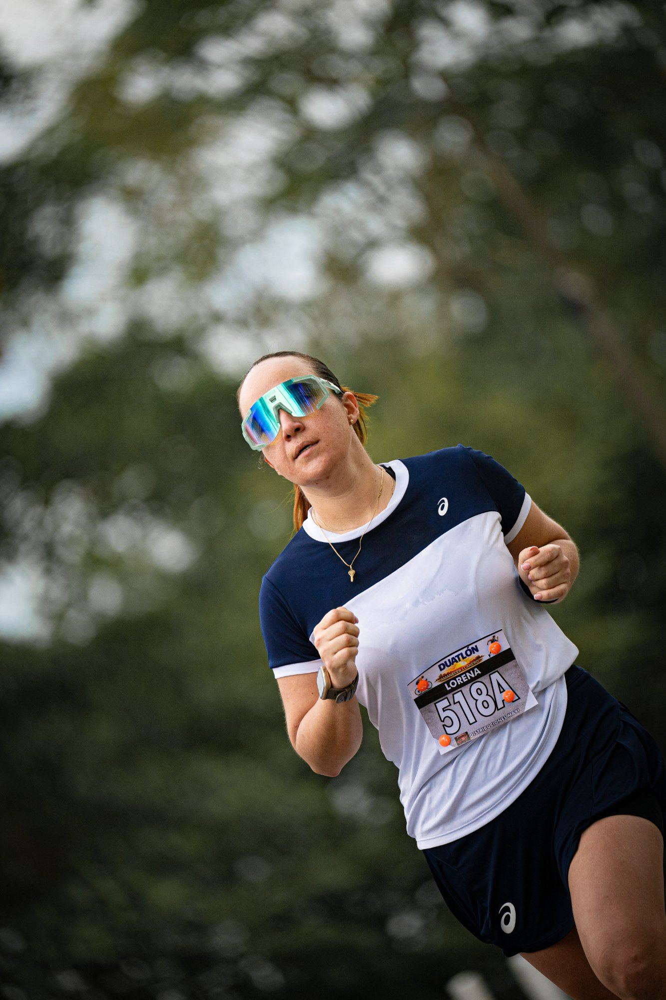
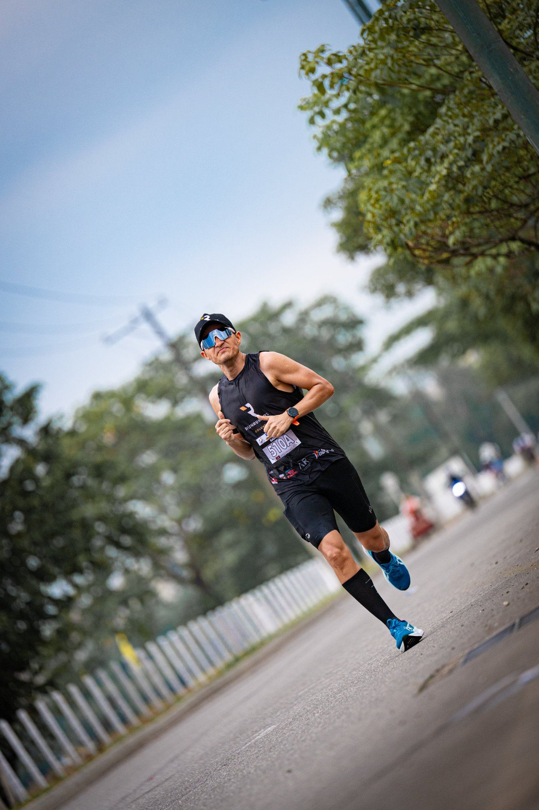
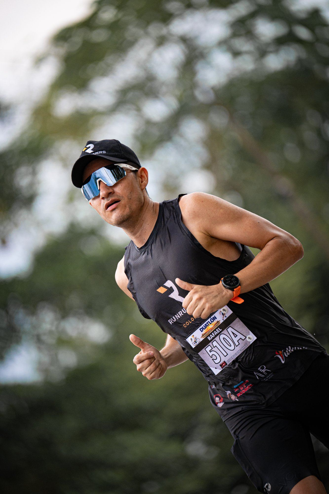

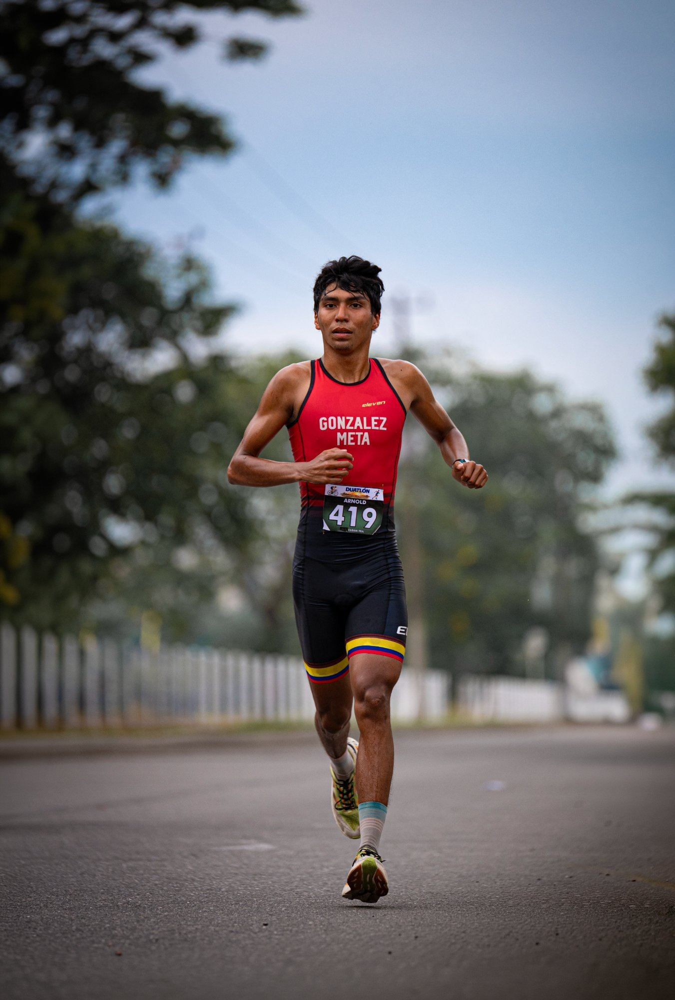
Cobertura fotográfica · Running
La Media Maratón de Villavicencio reunió a cientos de atletas en las calles de la capital del Meta. Cada kilómetro fue una historia de esfuerzo, determinación y orgullo personal. Estuve ahí para capturar el momento exacto en que cada corredor dio lo mejor de sí mismo.













